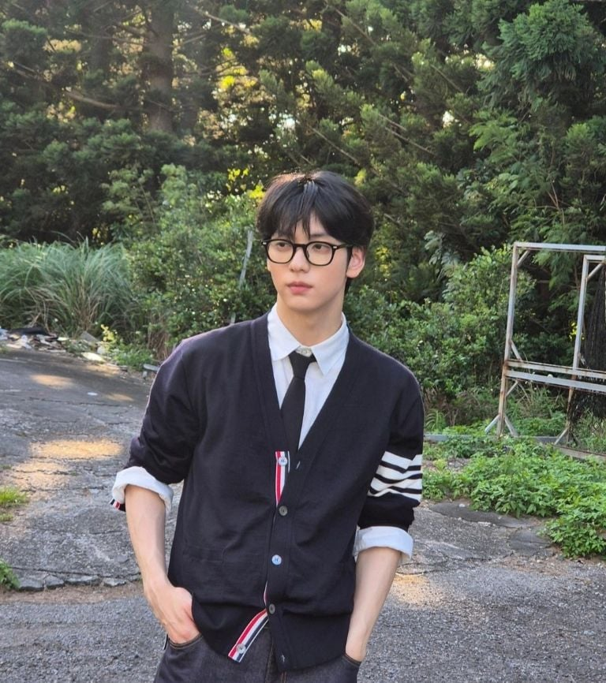

📋 Datos de Soobin
- Nombre real: Choi Soobin
- Nacimiento: 5 de diciembre de 2000
- Edad: 24 años
- Altura: 1.85 m
- Grupo: TXT (Tomorrow X Together)
- Posición: Líder, vocalista, MC de Music Bank
- Curiosidades: Ama a los animales, especialmente a los conejos 🐰
📷 Mejores Fotos de Soobin

🎶 Videos musicales oficiales
Blue Hour
수빈 (SOOBIN) 'Sunday Driver' Official MV
TXT (투모로우바이투게더) 'Deja Vu' Official MV
TXT (투모로우바이투게더) 'Over The Moon' Official MV
🎥 Fancam destacada de Soobin